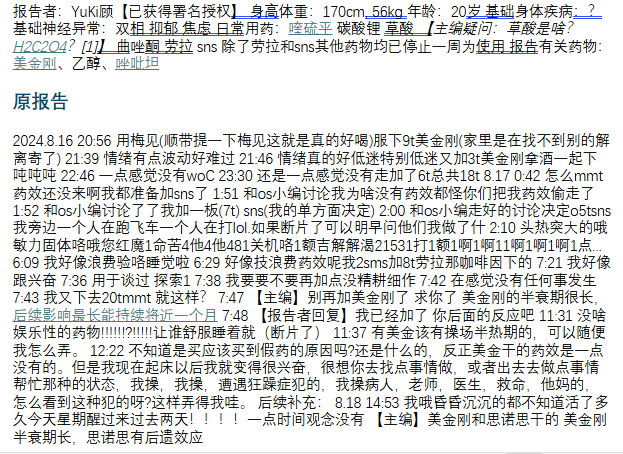
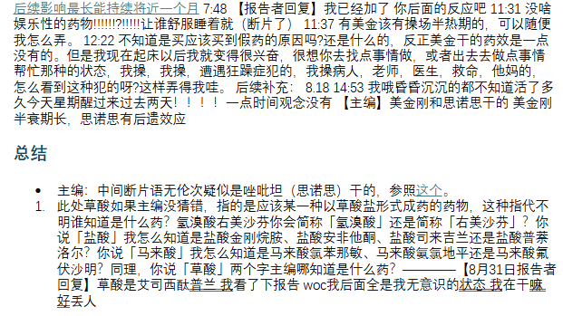
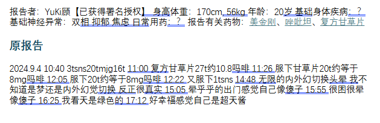

めふき2.0（柏枝凪斗版）
@lan_shang32900
RT @OverSpeed_Wiki: 该推主疑因阿片类药物羟考酮（奥施康定）过量意外逝世。
根据原OsWiki记录，该推主曾经提供过2篇报告，涉及药物美金刚、乙醇（酒精）、唑吡坦（思诺思）、复方甘草片
RIP



OverSpeed Wiki
@OverSpeed_Wiki
该推主疑因阿片类药物羟考酮（奥施康定）过量意外逝世。
根据原OsWiki记录，该推主曾经提供过2篇报告，涉及药物美金刚、乙醇（酒精）、唑吡坦（思诺思）、复方甘草片
RIP https://t.co/PRfb1I6189 https://t.co/ED764Y2vK4